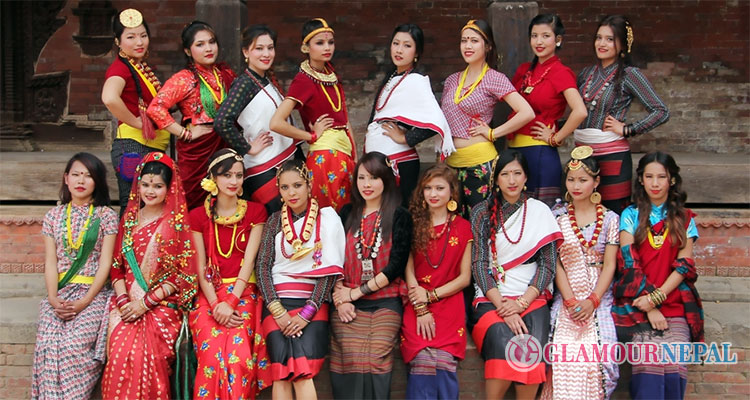
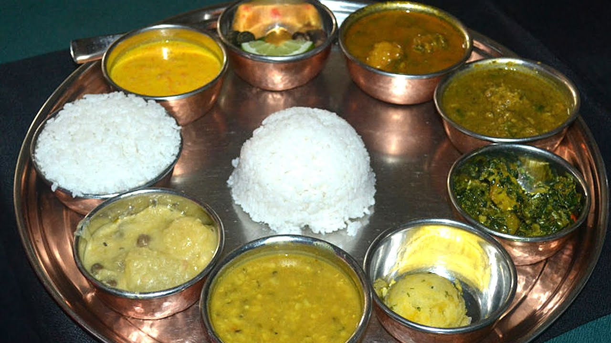

Culture of Nepal
Nepal is a multicultural nation which consist of different culture.customs and tradition varies from place to place of Nepal. A conglomeration lies in capital city Kathmandu where cultures are blending to form a national identity. Kathmandu Valley has served as the country’s cultural metropolis since the unification of Nepal in the 18th Century. A prominent factor in a Nepali’s everyday life is religion.Adding color to the lives of Nepalis are festivals the year round which they celebrate with much pomp and joy.Food plays an vital role in the celebration of these festivals. In Nepal peopleused to make different varieties of food in different festivals as it is rich in culture and tradition.
Religion:
Nepal was declared a secular country by the Parliament on May 18, 2006.Religions practiced in Nepal are: Hinduism, Buddhism, Islam, Christianity, Jainism, Sikhism, Bon, ancestor worship and animism. The majority of Nepalis are either Hindus or Buddhism. The two have co-existed in harmony throughcenturies.
Buddha is widely worshipped by both Buddhists and Hindus of Nepal. The fiveDhyani Buddhas; Vairochana, Akshobhaya, Rathasambhava, Amitabha and Amoghasiddhi, represent the five basic elements: earth, fire, water, air and ether. Buddhist philosophy conceives these deities to be the manifestations of Sunya or absolute void. Mahakaala and Bajrayogini are Vajrayana Buddhistdeities worshipped by Hindus as well.
Hindu Nepalis worship the ancient Vedic gods. Bramha the Creator, Vishnuthe Preserver and Shiva the Destroyer, are worshipped as the Supreme Hindu Trinity. People pray to the Shiva Linga or the phallic symbol of Lord Shiva in most Shiva temples. Shakti, the dynamic element in the female counterpart of Shiva, is highly revered and feared.
Mahadevi, Mahakali, Bhagabati, Ishwari are some of the names given.Kumari, the Virgin Goddess, also represents Shakti.Other popular deities are Ganesh for luck, Saraswati for knowledge, Lakshmi for wealth and Hanuman for protection. Krishna, believed to be the human incarnation of Lord Vishnuis also worshipped widely. Hindu holy scripts Bhagawat Gita, Ramayan and Mahabharat are widely read in Nepal. Vedas, Upanishads and other holy scriptures are read by well learned Brahmin Pundits during special occasions.

Customs:
The diversity in Nepal in terms of ethnicity again makes room for various sets of customs. Most of these customs go back to the Hindu, Buddhist or other religious traditions. Among them, the rules of marriage are particularly interesting. Traditional marriages call for deals arranged by parents afterthe boy or girl come of age.
Nepalese, mostly Hindu, do not eat beef. The cow, considered as Universal Mother, symbolizes motherhood, charity, and pity. To respect it is to put into practice the concept of Ahimsa, which in Sanskrit literally means "non-violence", an important component of Hinduism, Buddhism and Jainism. Before entering a temple or a house, you will often be asked to take off your shoes, so as not to pollute pure interiors with your stained soles. Some temples are forbidden to non-Hindus. The right hand, considered pure, is used to eat, pay, give and receive. If rural Nepal is mostly agrarian, some aspects of the urban life carry the glitz and glamour of the ultra-modern world.

Food:
Nepal does not have a distinct cooking style. However, food habits differdepending on the region. Nepali food has been influenced by Indian and Tibetan styles of cooking. Authentic Nepali taste is found in Newari and Thakai cuisines. Most Nepalis do not use cutlery but eat with their right hand.The regular Nepalimeal is dal (lentil soup), bhat (boiled rice) and tarkari (curried vegetables), often accompanied by achar (pickle). Curried meat is very popular, but is saved for special occasions, as it is relatively more expensive. Momos (steamed or fried dumplings) deserve a mention as one of the most popular snack among Nepalis. Rotis (flat bread) and dhedo (boiled flour) also make meals in some homes.
